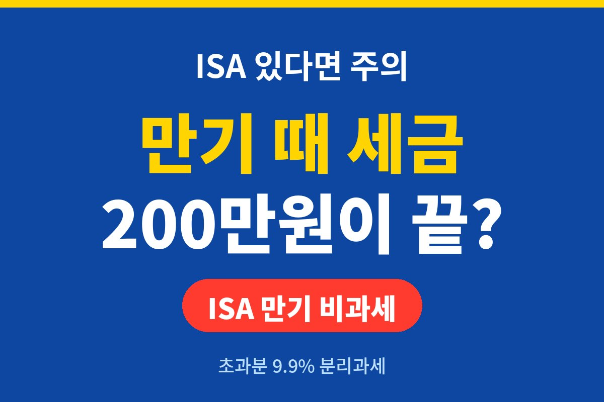
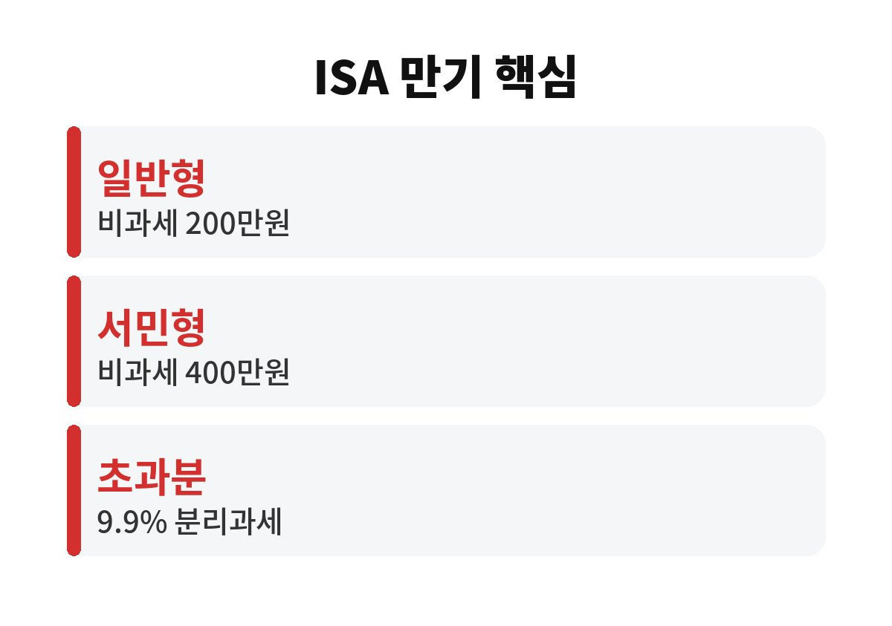
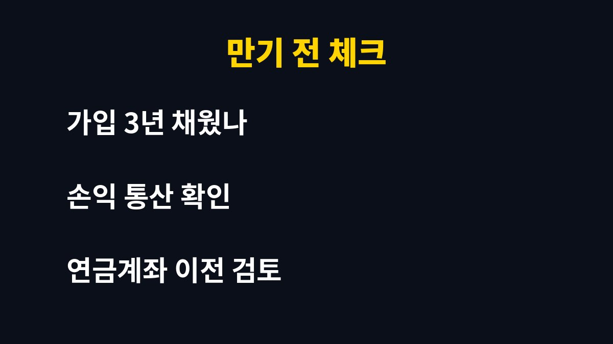

ISA 만기 때 비과세로 인정되는 순이익은 일반형 기준 200만원까지이고, 서민형은 400만원까지다. 이 금액을 넘는 이익에는 9.9% 분리과세가 붙는다.
ISA 계좌를 3년 넘게 들고 있는 직장인이라면 만기 직전에 무엇을 해야 세금이 줄어드는지 끝까지 보는 게 좋다.
ISA는 한 계좌 안에서 예금, 펀드, ETF 같은 여러 상품을 함께 굴리고, 만기에 이익과 손실을 합산해서 세금을 매기는 계좌다. 이 합산이 핵심이다. 어떤 상품에서 300만원을 벌고 다른 상품에서 100만원을 잃었다면 세금은 순이익 200만원을 기준으로 계산한다.
알려진 기준으로 일반형은 순이익 200만원까지, 서민형이나 농어민형은 400만원까지 비과세다. 한도를 넘는 부분은 9.9% 분리과세로 끝난다. 일반 금융 계좌의 이자와 배당에 붙는 15.4%보다 낮고, 금융소득종합과세와도 따로 계산된다. 다만 세법은 해마다 손볼 수 있으니 가입 조건과 한도는 은행이나 증권사 앱에서 꼭 다시 확인해야 한다.
많은 분이 "수익이 났으니 세금을 내겠지" 하고 넘어가는데, ISA는 계좌 전체를 한 덩어리로 본다. 올해 수익이 큰 종목만 보고 불안해할 필요가 없다는 뜻이다. 반대로 손실이 난 상품이 있다면 그만큼 세금 낼 이익이 줄어든다.
예를 들어 계좌 전체 순이익이 350만원인 일반형 가입자라면 200만원은 비과세고, 나머지 150만원에만 9.9%가 붙는다. 세금은 약 14만8천원 정도다. 같은 이익을 일반 계좌에서 얻었다면 이자소득세만 훨씬 많이 냈을 수 있다. 이 차이가 ISA를 쓰는 이유다.
| 구분 | 비과세 한도 | 초과분 세율 |
| 일반형 | 순이익 200만원 | 9.9% 분리과세 |
| 서민형·농어민형 | 순이익 400만원 | 9.9% 분리과세 |

여기가 가장 놓치기 쉬운 부분이다. 만기 해지금을 그냥 인출하면 그걸로 끝이지만, 만기 자금을 연금저축이나 IRP 같은 연금계좌로 옮기면 이전 금액의 10%, 최대 300만원까지 추가로 세액공제를 받을 수 있는 제도가 있다. 이미 연금계좌 납입 한도를 다 채웠는지, 이번 연말정산에서 공제 여력이 남아 있는지 먼저 따져 보면 된다.
또 ISA는 만기 후 재가입이 가능한 경우가 있다. 다만 재가입 조건과 비과세 한도 적용 방식은 시기와 금융회사에 따라 다를 수 있다. 그래서 만기일이 다가오면 한 달쯤 전에 앱에서 만기 안내를 확인하고 상담을 받아 두는 편이 안전하다.
ISA는 의무 가입 기간 3년을 채워야 비과세와 분리과세 혜택을 온전히 받는다. 중간에 해지하면 그동안 받은 세제 혜택이 취소되고 일반 과세로 계산될 수 있다. 급전이 필요해서 깨야 하는 상황이라면, 해지 전에 손실이 났는지 이익이 났는지부터 보고, 만기까지 얼마나 남았는지 따져 봐야 한다.
정리하면 순서는 간단하다. 첫째, 계좌 전체의 순이익을 확인한다. 둘째, 내 유형이 일반형인지 서민형인지 확인한다. 셋째, 연금계좌로 옮길 여력이 있는지 본다. 이 세 가지만 해도 만기 때 내는 세금이 달라질 수 있다.

혹시 내 ISA 만기일이 언제인지 정확히 알고 계신가요? 오늘 앱에서 한 번 열어 보시고, 도움이 됐다면 구독해 두세요. 다음 글에서도 생활에 바로 쓰이는 돈 이야기로 찾아올게요.
※ 이 글은 일반적인 정보 제공이며 투자 권유가 아닙니다. 세법과 한도는 변경될 수 있으니 금융회사에서 확인하세요.